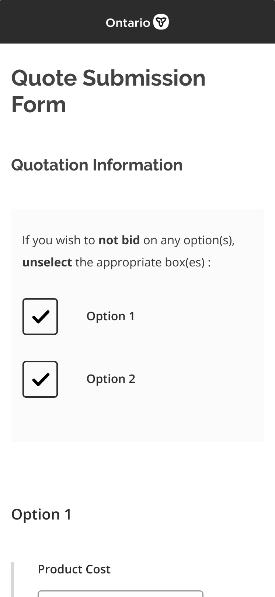
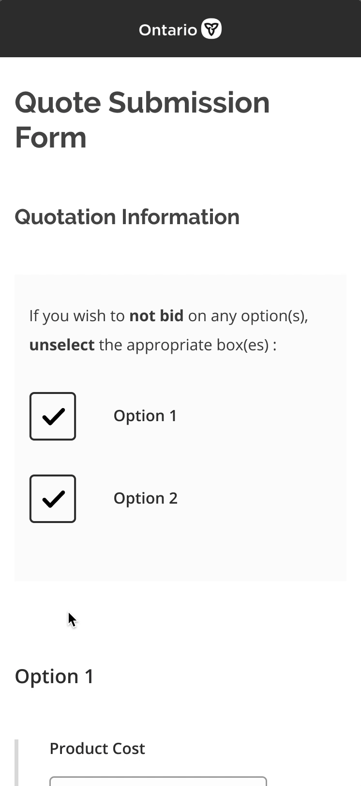
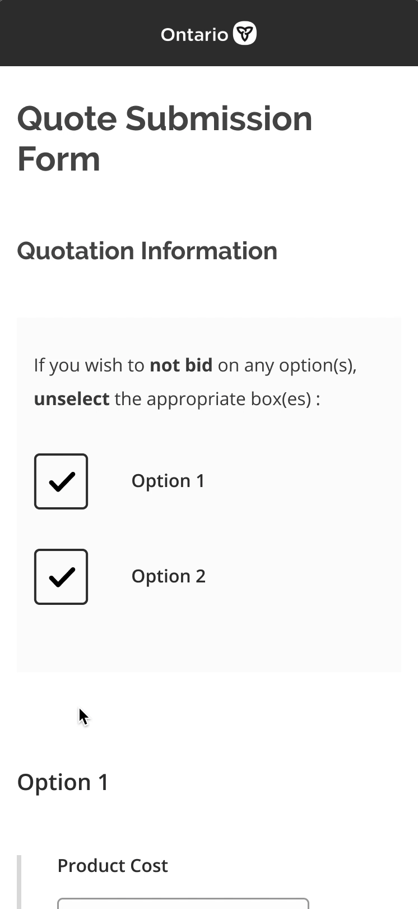

Transforming bid submissions for vendors of the Ministry of Government and Consumer Services.

TIMEFRAME
May 13-27, 2019
ROLE
Designer and researcher
TOOLS AND METHODS
Balsamiq, Figma, user interviews, usability testing
COMPANY
Ontario Digital Service Lab
As one of two product designers at Ontario Digital Service Lab working on multiple projects, I wore many hats from project scoping, problem assessment, user recruitment, user research to ideation.
On this particular project, I collaborated closely with another product design intern to assess our problem, recruit vendors for user research, design our prototypes, facilitate user interviews and usability testing, and synthesize and present our findings to clients over the span of a two week sprint.
The Government of Ontario’s enterprise-wide Vendor of Record (VOR) Program provides goods and services acquired by government ministries. The Ministry of Government and Consumer Services (MGCS) establishes agreements through open bidding, qualifying vendors to provide goods or services for a defined period, on specified terms and conditions. The Ontario Shared Services (OSS) facilitates this bidding process for the MGCS. The OSS team had approached our team at the Ontario Digital Service Lab to collaborate in improving the bidding process for vendors.
The OSS has observed that the current PDF form is not meeting the needs of vendors to make bid submissions when they are out of the office and do not have access to a computer. As a common result, vendors lose out on jobs because they miss the submission deadlines, and government ministries potentially lose out on the most affordable quotes.
The original bidding process required the OSS to fill out the first four fields, lock it, and then send it to each vendor via email along with a specification document detailing the service requested. Vendors must fill out the form on desktop and email the completed form to the OSS before the quote deadline.
We began our research process by evaluating the existing PDF form based off of the Nielson Usability Heuristics with the OSS team. For each of the 10 heuristics, I gave an explanation of specific aspects that were hindering the experience for vendors.
| System status visibility | Match between system and real world | User control and freedom | Error prevention |
Consistency and standards |
|---|---|---|---|---|
| Bolded red text boxes give clear indication of empty mandatory fields that need to be filled; file name is displayed upon uploading a file, but no visual or auditory cues are given to the user regarding how far along the upload is. | Some field labels are wordier than needed causing confusion. | Good use of save, clear and print buttons at the bottom of the form; However, clear button is right beside submit, which is a pain-point for users who accidentally click clear instead of submit. | Poor; No instructions visible for other mandatory fields, which could lead to constant error pop-ups with instructions; Text boxes that require number entry do not allow for text. | Quote table has confusing headings that are not easily differentiable from each other; goes against the navigation scheme mental model of users to scan in one direction as opposed to zig-zag; length of date fields are inconsistent. |
| Recognition rather than recall | Flexibility and efficiency of use | Aesthetic and minimalist design | Help users recognize, diagnose and recover from errors | Help and documentation |
|---|---|---|---|---|
| Users have to recall information from a seperate specification document to answer questions regarding the ability to meet the delivery date, provide correct stock and various quotes. | Tailored toward new vendors, which is problematic because the ministry rarely adds new vendors to their VOR; no auto-population of unvarying field entries for regular vendors. |
Forms fields to not match appropriate size of input text; Text indicating that fields marked with an asterisk are mandatory is overshadowed by bold red field outlines; Specification of date format is irrelevant due to calendar feature; Lack of typographical hierarchy; Very little whitespace creates for poor readability. |
Error messages are clear and provide constructive solution. For example, incorrect email address prompts the error message "Invalid e-mail address. Please enter a valid e-mail address." | Poor; system is extremely unusable without instructions; several fields are difficult to understand and the quotation table is unintuitive when filling out alone for the first time; no further instructions given regarding certain sections or fields leading to vendors having to contact their Print Coordinator. |
We recruited eight vendors to conduct research sessions for the duration of our two week sprint. Each research session started off with a user interview to understand how vendors currently submit quotes to other public and private organizations. The user interview then led into a usability test of the prototype we had designed that week.
In week one, we reused most of the fields from the original PDF form in a low fidelity custom webform prototype that we designed in Balsamiq for mobile. We chose to design for mobile to ensure that the form would be multi-plaftorm accessible as we scale up to desktop. This low fidelity custom webform was designed with respect to constraints associated with Adobe Experience Manager (AEM), a content management system that the OSS was adamant about using.
In terms of sharing this webform with vendors, an OSS member would provide a link to this form in the body of an email that has an attached specification document and unique job details. Our goal for week 1 was to understand problems that vendors face in their user journey and determine which fields could be removed. Four vendors were recruited for user interviews and usability testing.
From interviewing the four vendors about their experience going through the bidding process with the OSS, we pieced together a typical journey of a vendor who’s bid has been approved.
We had to rethink the design of vendor authentication, since using vendor ID and email failed. Vendors do not remember their vendor ID, and expressed concern about their employees using a different email to fill out the form on their behalf. Providing quote information needed to be simplified because the prototype’s UI and content was poorly designed. Vendors fill out total cost per option, usually skipping product cost and shipping cost. Overall, vendors expressed that this prototype is a step in the right direction because of its accessibility.
On the business side, there were concerns about developmental cost and restrictions regarding storage of data. The lack of a database would translate to an increased workload for team members in the OSS. We decided to prototype two alternatives in week two and conduct a preference test with 4 different vendors.
To address the problems faced in week 1, we proposed an email alternative. This method forgoes the vendor contact information required in the original process, since the vendor’s email response in-line allows the OSS team to authenticate them. The email alternative is multi-platform accessible. The number of touchpoints in filling out the form is reduced, since the bid form is now integrated within the email unlike a PDF form or web-form.
We also proposed using the form builder within Ontario.ca’s Drupal CMS since there is no associated cost. This method allows the OSS team to build form templates for jobs that vary in number of requested options (i.e. form A would be used for jobs that require a quote on 1 option, form B would be used for jobs that require a quote on 2 options, etc.). This is a time-efficient approach as the OSS team, as most jobs would not go beyond asking for three options.
The link to this form would be stated in the body of an email, along with job information that the vendor would have to enter into the form, and the attached specification document.
The form in the video is accessible. It does not seem accessible because it was in staging, and had not been sent to production. Notice how some fields are not outlined.
We decided to rule out the webform built by the form builder in Ontario.ca’s CMS due to its inability to send vendors confirmation emails detailing their successful submission and summary details. The email is a viable option with respect to business constraints and multi-platform accessibility, despite its inability to recognize errors. However, vendors had stated that they take the bidding process seriously and would rarely make any mistakes. Using these insights, we decided to spend time exploring how we could significantly improve the custom webform design from week 1, since the form builder within Ontario.ca’s CMS was no longer a viable option.
Taking into account the positive and negative feedback from all three of our prototypes, we designed an optimal high fidelity mockup of the webform seen in week 1 for the OSS team. This method is user friendly, multi-platform accessible, allows for confirmation emails and detects form field errors. This design was passed onto our development team to prototype.
Attach document
Option deselection
Error message
 

This feature provides vendors autonomy in how they want to provide their quote. We improved the system status visibility by introducing a progress bar for document uploads. On the summary page of the form, vendors can view a list of all the documents that they have attached for their quote.
In this prototype, there were two requested options for the job posted. However, vendors may not be able to provide a quote for all options. To reduce the amount of scrolling, we introduced an option deselection feature that allows vendors to bypass all the fields of the options they wish to ignore.
We increased accessibility of error messages. The form sends the user to the first error on the form upon submitting if there are any. Error fields are bolded in red, accompanied with an error icon with directions for user to fix their errors.
Although the optimal solution for the vendors is the high fidelity custom webform shown above, we advised the OSS team pilot the email template as an immediate solution. Taking into account the negative feedback, the email template is still a substantial improvement from the original PDF form and has no development costs associated with it.
We recommended that OSS pilot the email template with several of their vendors. If there is dissatisfaction, the OSS team should invest resources into developing our prototype of the high fidelity custom webform, and test iteratively with a few vendors before launch.
These are my main takaways during the span of this project :
Say Hello